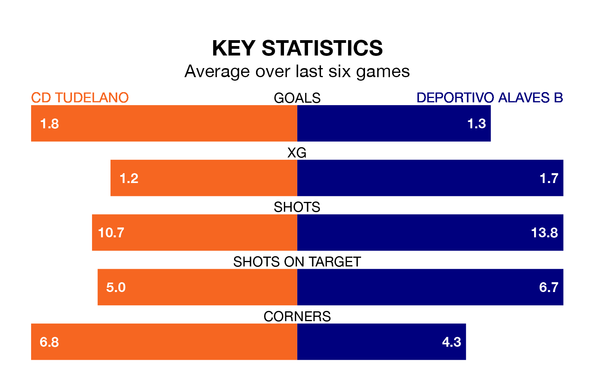

Deportivo Alaves B travel to CD Tudelano on early Sunday in the Segunda División RFEF Group 2.
The visitors come into the game on the back of a win in their last match, having beaten CD Calahorra 3-2 at home, with a goal from Aimar González De Here Murgialday.
Tudelano also won their last match, 3-0 against CD Valle Egüés, with their goals scored by Gianluca Simeone and Joel Rodríguez Satorres.
With 57 goals in 33 games so far this season, Deportivo Alaves B are scoring more than average in the league with 1.7 goals per game. But they are conceding more than average too, letting in 40 goals at a rate of 1.2 per game.
Tudelano are also above average scorers, with 1.3 goals per game, compared to a league average of 1.1. They have conceded 1.0 goal per game.
The visitors are sixth in the table after 33 games, of which they have won 16 and drawn four, earning 52 points.
The home side are one place behind Deportivo Alaves B in seventh, with 11 wins and 12 draws putting them on 45 points.
Tudelano are in mixed form in the Segunda División RFEF Group 2, with three wins and a draw from their last six games.
With two wins and four losses over that period, Deportivo Alaves B's form is worse – they have taken six points from 18, compared to Tudelano's 10.
In the last five years, Tudelano and Deportivo Alaves B have played each other on four occasions. Deportivo Alaves B won three of them and they drew once.
On average, Tudelano scored 0.5 goals and Deportivo Alaves B 1.5 in those matches.
Their last meeting was on January 7, when Deportivo Alaves B won 3-2 at home.
Updated: 12:00 (UTC), 02/05/24